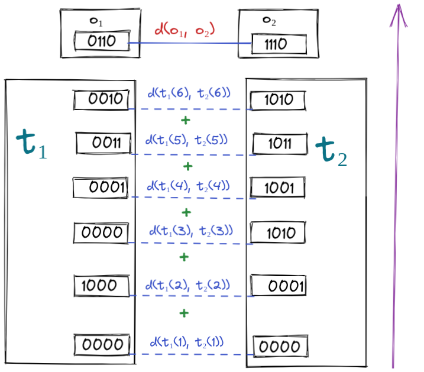

author: niplav, created: 2024-04-22, modified: 2025-01-28, language: english, status: in progress, importance: 5, confidence: likely
In which to compare how similarly programs compute their outputs, naïvely and less naïvely.
Attention conservation notice: Premature formalization, ab-hoc mathematical definition.
In the twin prisoners dilemma, I cooperate with my twin because we're implementing the same algorithm. If we modify the twin slightly, for example to have a slightly longer right index-finger-nail, I would still cooperate, even though we're different algorithms, since little enough has been changed about our algorithms that the internal states and the output are basically the same.
It could be that I'm in a prisoner's dilemma with some program
$p^{\star}$ that, given some inputs, returns the same outputs as I do,
but for completely different "reasons"—that is, the internal states
are very different, and a slight change in input would cause the output
to be radically different. Intuitively, my similarity to $p^{\star}$
is pretty small, because even though it gives the same output, it gives
that output for very different reasons, so I don't have much control
over its outputs by controlling my own computations.
Let's call this similarity of two algorithms the logical correlation between the two algorithms (alternative terms "include “logical influence,” “logical correlation,” “correlation,” “quasi-causation,” “metacausation,” […] “entanglement”[,] “acausal influence”"). I take this term from Demski & Garrabrant 2020:
One idea is that exact copies should be treated as 100% under your “logical control”. For approximate models of you, or merely similar agents, control should drop off sharply as logical correlation decreases. But how does this work?
—Abram Demski & Scott Garrabrant, “Embedded Agency” p. 12, 2020
Similarly:
The reasoning behind cooperation does not involve a common cause of all collaborators' decisions. Instead, the correlation may be viewed as logical (Garrabrant et al., 2016): if I cooperate, then this implies that all other implementations of my decision algorithm also cooperate.
—Caspar Oesterheld, “Multiverse-wide Cooperation via Correlated Decision Making” p. 18, 2018
There isn't yet an established way of estimating the logical correlation between different decision algorithms.
Thus: Consider the some naïve formula (which we'll designate by
$合$1) for logical correlation2: Something that takes in two
programs and returns a number that quantifies how similarly the two
programs compute what they compute.
Let a program $p$ be a tuple of code for a Turing
machine and intermediate
tape states after each command execution. We'll treat the final tape
state as the output, all in binary.
That is $p=(c, t)$, with $c \in \{0, 1\}^+$ and $t \in (\{0,
1\}^+)^+$. Let $l=|t|$ be the number of steps that $p$ takes to halt.
For simplicity's sake, let's give $t[l]$ (the tape state upon halting)
the name $o$, the output.
$合: P \rightarrow ℝ$ where $P$ is the set of all possible programs for some turing machine $\mathcal{TM}$. $合$ may potentially only map into a real interval, but I want it to be a spectrum, which rules out many other notions of program similarity from computer science.$合(p, p)=0$.$合(p_1, p_2)=合(p_2, p_1)$.$p_1 \not=p_2$, then $合(p_1, p_2)>0$. This condition is dropped if we're fine with $合$ being a pseudometric.$合(p_1, p_3) \le 合(p_1, p_2)+合(p_2, p_3)$.$p_1$ and $p_2$ have very similar outputs, and $p_3$ has a very different output, then $合(p_1, p_2)<合(p_1, p_3)$ (and $合(p_1, p_2)<合(p_2, p_3)$).
$p$, which outputs a binary string $o \in \{0, 1\}$, and $p^{\not \sim}$, which computes $o$ in a completely different way, as well as $p^{\lnot}$, which first runs $p$, and then flips every bit on the tape, finally returning the negation of $o$. In this case, it seems that if $p$ is a decision algorithm, it has far more "control" over the output of $p^{\lnot}$ than over $p^{\not \sim}$.Let $p_1=(c_1, t_1), p_2=(c_2, t_2)$ be two halting programs,
$l_1, l_2$ are the number of steps it takes $p_1, p_2$ to halt,
and $o_1=t_{l_1}, o_2=t_{l_2}$ the last tape states (outputs) of the
two programs.
Then a formula for the logical correlation $合$ of $p_1, p_2$,
a tape-state discount factor $γ$3, and a string-distance
metric $d:
\{0, 1\}^+ \times \{0, 1\}^+ \rightarrow ℕ$ could be
The lower $合$, the higher the logical correlation between $p_1$
and $p_2$.
Let's take a look at the equation again, but this time with some color highlighting:
The fundamental idea is that we first compute the distance of the two outputs. We then go backward through the trace of the two programs, adding up the pairwise differences of the traces at each timestep, potentially discounting the differences the farther they lie in in the "past" of the output/further towards the start of the computation.

Finally, we subtract the inverse of this (discounted) sum of trace differences from the output difference4.
The fraction can maximally be ½ (since we're
adding a number greater than zero to two in the lower
number). Thus, since
we're subtracting a number ≤½ from $d(o_1, o_2)+0.5$, the resulting
logical correlation must be $d(o_1, o_2)≤合(p_1, p_2, γ)≤d(o_1,
o_2)+0.5$. That implies that for three programs with the same output,
their logical correlations all lie in that range. That also means that
if $d(o_1, o_2)<d(o_1, o_3)$, then it's the case that $合(p_1, p_2,
γ)<合(p_1, p_3, γ)$.
Or, in even simpler terms; "Output similarity dominates trace similarity."
One might also want to be able to deal with the fact that programs have different trace lengths, and penalize that, e.g. amending the formula:
Does this fulfill our desiderata from earlier? I'll assume that the
string distance $d$ is a metric, in the mathematical sense.
$合(p, p)=0$Proof:
Since $d$ is a metric, $d(o, o)=0$.
The minimal logical correlation is 0.
This is true, because:
$d(o_1, o_2)≥0$.$d(t_1[l_1-k], t_2[l_2-k])≥0$ for every $k$.$γ^k≥0$ for every $k$.Thus we have a sum of products of only positive things, which is in turn positive itself.
But, unfortunately, it isn't the case that if $p_1≠p_2$, then
$合(p_1, p_2, γ)>0$. Thus $合$ is only a pseudometric.
Consider, for example, two programs that both write a $1$ to the
starting position on the tape and then halt, but with the difference that
$p_1$ moves left and then right in the first two steps, and $p_2$
moves right and then left in the first two steps. Both programs have
the same tape-state trace, but are not "equal" in the strict sense as
they have different source codes.
You might now complain that this is vacuous, since the two programs have no relevant functional difference. That's true, but I suspect there's some trickier edge cases here where randomly initialized tapes can have very different (or in other cases equal) tape-state traces. If you find an equivalence class of programs that are just vacuously different, I'd be interested in hearing about it.
I think that the naïve formula is too naïve. Reasons:
$p$ and a program $p^-$ which is just $p$ but with the tape reversed (so that whenever $p$ makes a step left, $p^-$ makes a step right, and same with right steps for $p$). Intuitively $p$ and $p^-$ should have a very high logical correlation, but $合$ would tell us that they very much don't.$合$ doesn't really make a statement about which states of the program influence which other states, it just compares them.$合$, and ideally one would want to be able to compute the logical correlation without having to run the program.I think one can create a better (though not perfect) way of determining logical correlations based on (something like) Shapley Values and possible tape-permutations.
We'll inherit the basic setup from the naïve formula, but now
we won't determine the logical correlation of the whole outputs $o_1,
o_2$. Instead we pick one bit from each output, say $b_1=o_1[k],
b_2=o_2[k]$ for some $k \in ℕ$.
This formula is based on the assumption that Shapley values of tape
cells over time are a kind of fingerprint of the program as it runs,
and as such can be compared with some distance function akin to $d$
in the naïve formula.
We treat each tape state $t_i$ of a Turing machine as a set of players,
which can play either $0$ or $1$ (the two states each cell on the
tape can assume).
Then we compute the Shapley value for each tape state on the bit
produced down the line by the Turing machine. To recap, the Shapley value
assumes that there's a set $t_i(j)$ (with $j \in ℕ$) of players,
and a function $v: 2^{t_i(j)} \rightarrow \{0,1\}$ for all subsets
of players—in this case the execution of the program from $t_i$
until it halts. It's assumed that $v(\emptyset)=0$.
The Shapley value for a player $j$ is then computed with the following equation:
Two conceptual difficulties present themselves:
1. can be solved by setting the null action to the tapestate produced by
the program preceding the tapestate. I imagine this as a tapestate being
able to "decide" to flip to the opposite bit before the program resumes,
which counts as participating. We'll designate the function of letting
a program $p$ continue running from a timestep $k$ until halting as
$\bar{p}_k$.
(Note that it can very well be the case that a cell flipping its tape bit can have a negative Shapley value, e.g. if the output bit is one if the input bit does nothing, and zero if the input bit is flipped. This felt like a problem to me for a while, but now I would guess it's not an issue, and is just a genuine behavior of the program that can be compared to the other one. I continue feeling a bit confused about whether there's something worth fixing here.)
For 2., my best solution is to be (overly?) expansive in which tape cells
are considered as potential contributions: Let's call the "leftmost"
tape cell reached by a program on a Turing machine during the whole
execution $f^{\leftarrow}$ and the "rightmost" one $f^{\rightarrow}$
($f$ for "frontier").
Then the subrange indexed of the whole tape is a range of natural
numbers $[\min(f^{\leftarrow}_1, f^{\leftarrow}_2), \dots,
\max(f^{\rightarrow}_1, f^{\rightarrow}_2)]$, abbreviated as
$f^{\leftrightarrow}$.
Cells that haven't been "reached" yet by the program (or never will) automatically have a Shapley value of 0, that just falls out of the formula.5 Because we're taking the biggest possible "reached envelope" on the tape the tape segments for both programs have the same size.
So, for a bit $b$ in the output of the program $p$, at some timestep
$k$, we get a list of Shapley values:
We'll call $ᖫ(p, t, k)$ the Shapley value profile of a program
$p$ at a timestep $k$.
$ᖫ$ returns… a list of real numbers. So if we evaluate the Shapley
value profile of two tape states for two different programs, we have to
compare two same-length lists of real numbers and figure out how similar
they are.
There are many ways to do so. I don't have a particular favorite, but for convience let's pretend we take the element-wise mean-squared error and call it a day.
I'll designate whatever difference measure is decided on as $d$,
just as earlier.
If we just use the difference between Shapley values for intermediate tape states, we won't have solved the first problem of the naïve formula: Direction-reversed programs are evaluated as being extremely dissimilar, even though they are very similar.
As hinted, I don't have a great solution to this, but my current best
approach is to look at permutations of one of the tapes, and choose the
one which best "matches up" the two Shapley value profiles with each
other. E.g. for $p, p^{-}$ from earlier we'd compare the two programs
using the permutation that reverses the tape of $p^{-}$.
It's important that this permutation be chosen once for all timesteps.
I don't like this solution. Permutations are too permissive,
and two programs where $p_1$ is best modeled as being pairwise
flips of neighboring cells of $p_2$ are, intuitively, quite
dissimilar.
My current best idea is to penalize permutations for
complexity, e.g. by preferring permutations that can be
constructed from few pairwise swappings (one generating
set of the
symmetric group).
But that would strongly penalize "natural" very similar programs, such as
$p, p^{-}$. If anyone here has good alternative ideas, hit me up.
Phew! That was a lot. Putting it all together, in a similar framework as with the naïve formula, yields6:
with
If the two output bits are different, "start" with the logical correlation being 1. Go through the tape states backwards in terms of the two programs being run, back to the first "shared" program state. For each tape state, compute the Shapley value profile. Permute one Shapley value profile that it "best" matches up with the other one. Compute the difference of the Shapley value profiles, and sum them up.
The bigger the summed diffence, the smaller the exponent of the
negative of that distance. The largest possible value of $挧$ is
$2-ε$, the smallest possible value is 0—in cases where $b_1=b_2$
and the sum of differences is zero.
I see one clear indicator that this hasn't been ironed out yet: If
$p_1$ computes an output by first computing the "left half" and then the
"right half" (in terms of location on the tape relative to the starting
position), and $p_2$ computes first the "right half" and then the
"left half", but compute both halves in very similar ways, then they
should be very logically correlated, but the less naïve formula will
tell you that they're quite different. (Which is just a version of the
tape permutation, but over runtime.)
I don't know how to account for time permutation without even more ugly hacks.
The formulae I cobbled together are pretty specialized to Turing machines, and lack desired features. Some possible alternatives, which I'm not fond of for various reasons:
$t[f^{\leftrightarrow}]$, and that (2) it requires freely variable input parameters, but my æsthetic wants a method to compare two programs as static, unvariable objects. Still, if it turns out that mutual information of tape histories is the true name of logical correlation, I won't be surprised.Suggested by GPT-4. Stands for joining, combining, uniting. Also "to suit; to fit", "to have sexual intercourse", "to fight, to have a confrontation with", or "to be equivalent to, to add up". ↩
Actually not explained in detail anywhere, as far as I can tell. ↩
Which is needed because tape states close to the output are more important than tape states early on. ↩
Together with two constants to avoid division by zero or same logical correlations for programs with different outputs differences. ↩
I have the suspicion that this whole thing isn't actually a problem and one can just compare permutations of the whole infinite tape, but I don't want to take any chances with weirdnesses around permutations of infinitely many elements, or the mean-squared error between infinitely long lists. Also it's nice to be able to actually implement the solution. ↩
挧 is a ghost character, and as such has no previously assigned meaning. ↩